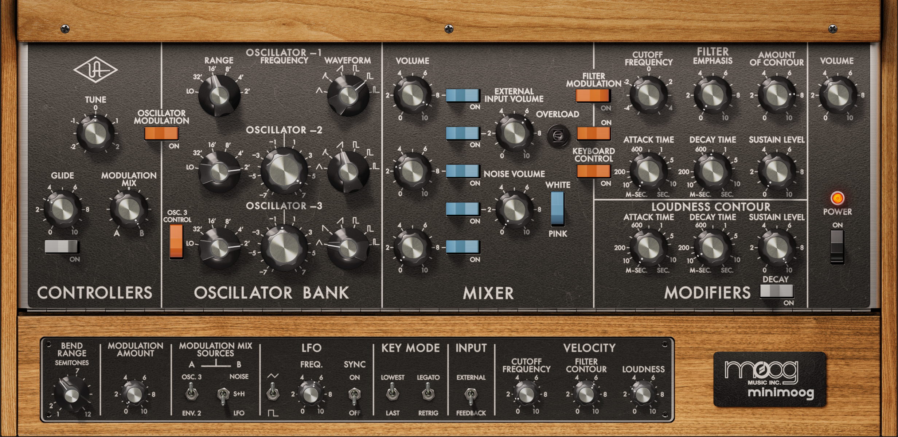

Live-coding is a performance art form where musician-coders compose code that makes music while you watch:
The tool that Switch Angel is using in that video is Strudel. Its most striking feature is the use of pattern microformats1 to define rhythm and melody.
1 The specific microformats Strudel uses are lifted directly from Tidal Cycles, a Haskell-based tool that pioneered this whole approach to live coding, albeit building on decades of previous work from the SuperCollider community and others.
The sounds we hear though, are generated by a synthesizer that combines a basic sampler and standard pipeline of audio FX units. When Switch Angel invokes duck to make the kick drum pump through the bassline, she’s configuring one of those standard FX units.
Other live-coding tools, such as SuperCollider, are infinitely flexible, bound only by your imagination and your CPU. But in Strudel the synthesizer is hard-coded: it’s not possible to vary it within Strudel itself.
And it’s monolithic: all the functionality is bolted on to a single object, like a Swiss army knife with tweezers, a magnifying glass, a pair of miniature scissors, a tin opener, a tool for doing something to a horse, a corkscrew, a wrench, and three types of nail file.
A hard-coded monolith runs against normal design instincts in software where we favour modularity, abstraction, and separation of concerns. So, at first blush, it struck me as poor design.
In fact, it’s the genius of the thing.
Knob-per-function
Up until the 1980s, synthesizers had a simple signal pipeline. There were relatively few parameters, and each had a lovely big knob to twist.

In contrast, the digital synths of the 1980s and 90s offered more power but at a price. Digital synths had hundreds or thousands of parameters, but they were buried behind a tiny LCD screen and a couple of rubbery menu buttons.
The loss of immediacy translated into a professionalisation of sound design. Early dance music runs on live tweaking the six-parameter birdsong of the Roland 3032. Conversely, the hallmark of 90s dance is the manufacturer preset – think of the iconic Korg M1 Piano 16ft or Roland D-50 Pizzagogo.
2 Aside from its primitive synthesizer, the 303 had a primitive sequencer. This was so obtuse that it forced musicians to discover new patterns rather than write them. Strudel’s microformats do this too, but that’s another essay.
3 Albeit often with innovations to lessen the trade-off, perhaps best exemplified by Ashun Sound Machines’ wonderful Hydrasynth.
Since the 2000s, there has been a marked swing back to “knob-per-function”3. Most knobs never get used, but they’re there and you can tweak them. You can play the instrument.
APIs you can play
Strudel, then, is a knob-per-function API. It exposes each parameter of the synth as a separate method. They can be chained together into a single expression and executed with a satisfying Ctrl-Enter.
The infinite flexibility of the underlying digital signal processing engine is traded for the immediate kineticism of an analog front panel.
Libraries for interactive data analysis and other exploratory work share something of this instinct: pandas, numpy and torch have big, flat top-level namespaces stuffed with functions to tab-complete. The pattern recurs wherever the loop needs to be tight.
What’s lost is the ability to reconfigure the instrument from scratch mid-set. What’s won is the ability to play it.